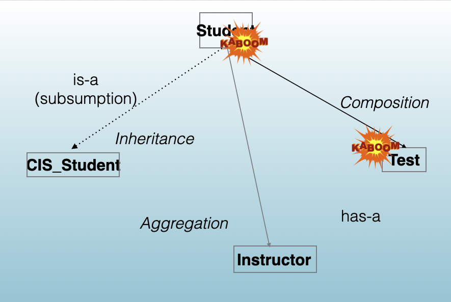
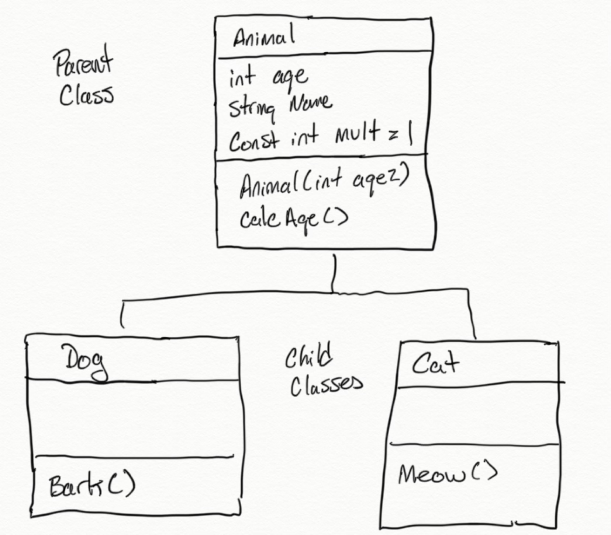
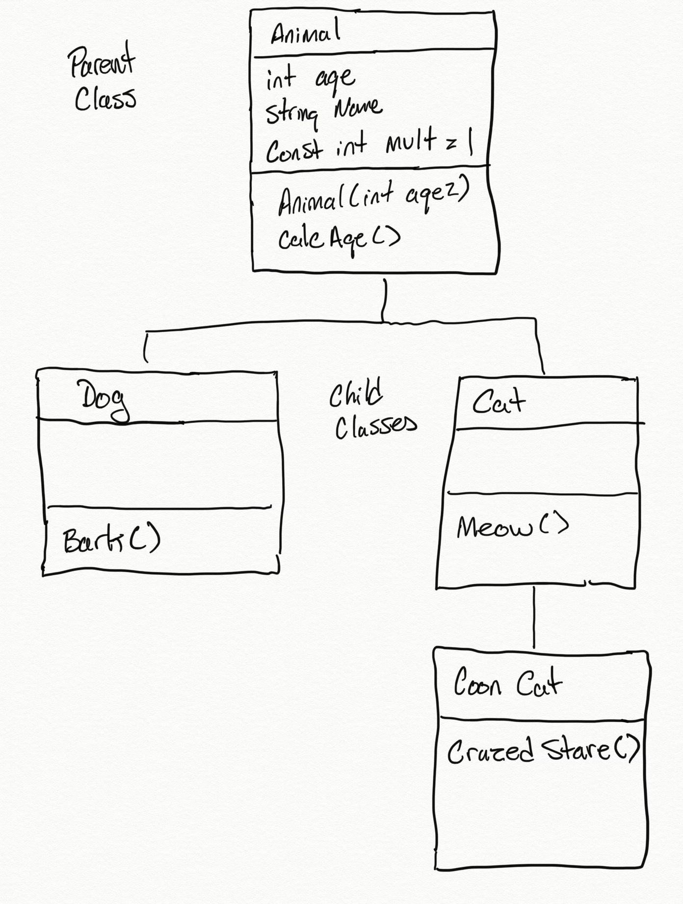
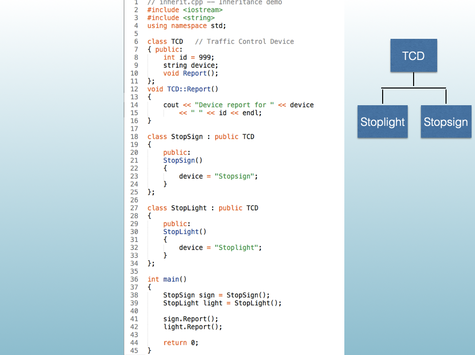
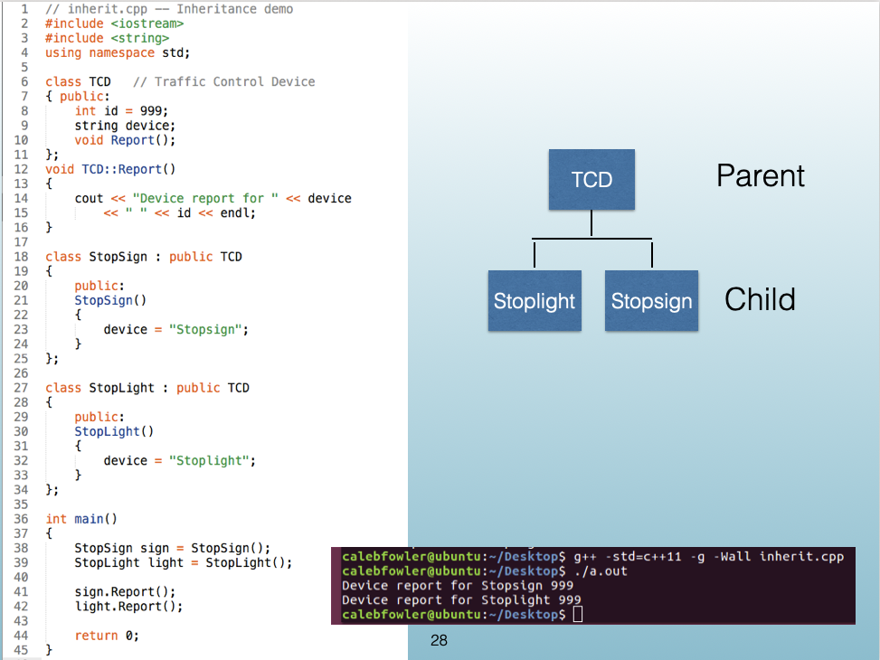
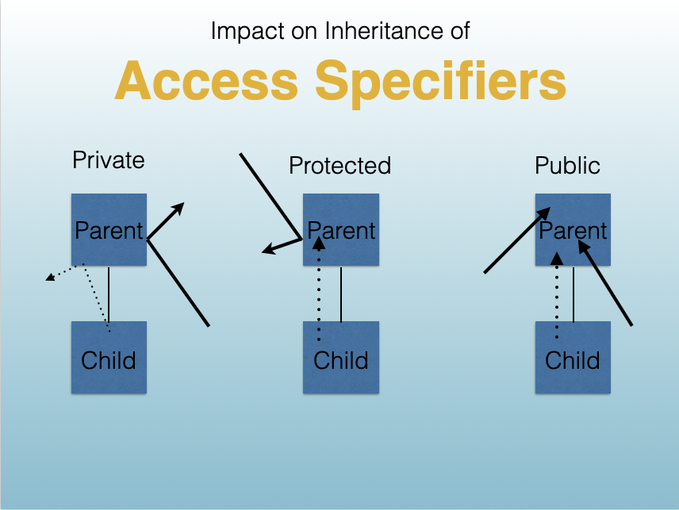

C++





class Stack : public vector<int> {
// no private vector: Stack IS a vector,
// so the storage is inherited
public:
void push(int value) { push_back(value); }
int pop() {
int top = back();
pop_back();
return top;
}
// no empty() here: it is inherited from vector
};
int main() {
Stack s;
s.push(1);
s.push(2);
s.insert(s.begin(), 99); // inherited from vector
s[1] = 42; // inherited from vector
while (!s.empty()) {
cout << s.pop() << " ";
}
return 0;
}vector<int>.push_back and pop_back.2 42 99. A stack should give back only 2 1.class Person {
private:
string name;
int id = 0;
public:
void setName(const string& n) { name = n; }
void setId(int i) { id = i; }
void print() const { cout << name << " (" << id << ")" << endl; }
};
class Student : public Person { // a Student is a Person
private:
string major;
public:
void setMajor(const string& m) { major = m; }
};
class Instructor : public Person { // an Instructor is a Person
private:
string office;
public:
void setOffice(const string& o) { office = o; }
};
int main() {
Student ava;
ava.setName("Ava"); // written once, in Person
ava.setId(1001);
ava.setMajor("CS");
Instructor ng;
ng.setName("Ng"); // the same code, reused
ng.setId(7);
ng.setOffice("BS 214");
ava.print();
ng.print();
return 0;
}print(). Write them twice?| Part | Meaning |
|---|---|
Person |
The base class, or parent: the general class |
Student |
The derived class, or child: adds what is special |
: |
Starts the list of base classes: “inherits from” |
public |
Person’s public members stay public in Student (Topic 3) |
{ ... } |
The body declares only what Student adds |
class Person {
private:
string name;
int id = 0;
public:
void setName(const string& n) { name = n; }
void setId(int i) { id = i; }
string getName() const { return name; }
void print() const {
cout << name << " (" << id << ")" << endl;
}
};
// Student gets everything above and adds a major
class Student : public Person {
private:
string major;
public:
void setMajor(const string& m) { major = m; }
string getMajor() const { return major; }
};
int main() {
Student ava;
ava.setName("Ava"); // inherited from Person
ava.setId(1001); // inherited from Person
ava.setMajor("CS"); // added by Student
ava.print(); // inherited: prints name and id only
cout << ava.getName() << " studies " << ava.getMajor() << endl;
return 0;
}ava was built from Student. List every data member it holds.ava (a Student)
+-----------------------------+
| Person part |
| name "Ava" |
| id 1001 |
+-----------------------------+
| Student part |
| major "CS" |
+-----------------------------+setName, setId, getName, print from Person; setMajor, getMajor from Student.name but cannot touch it (Topic 3).class Student : public Person gives every Student a complete Person part plus what Student adds.name. Can Student’s own code use it?
'std::string Person::name' is private within this contextname but cannot touch it.// Fix 1: name stays private,
// Student uses the public getter
class Person {
private:
string name;
public:
void setName(const string& n) { name = n; }
string getName() const { return name; }
};
class Student : public Person {
private:
string major;
public:
void print() const {
cout << getName() << ", " << major << endl;
}
};| Member is | Its own class | A derived class | Outside code, such as main |
|---|---|---|---|
public |
yes | yes | yes |
protected |
yes | yes | no |
private |
yes | no | no |
class Member {
private:
int dues = 20;
protected:
string name = "Ben";
public:
string getName() const { return name; }
};
class Officer : public Member {
public:
void print() const {
cout << name << endl; // A
cout << dues << endl; // B
}
};
int main() {
Officer ben;
ben.print();
cout << ben.getName() << endl; // C
cout << ben.name << endl; // D
return 0;
}class Member {
private:
int dues = 20;
protected:
string name = "Ben";
public:
string getName() const { return name; }
};
class Officer : public Member {
public:
void print() const {
cout << name << endl; // A: compiles, protected: Officer is family
cout << dues << endl; // B: error, dues is private to Member
}
};
int main() {
Officer ben;
ben.print();
cout << ben.getName() << endl; // C: compiles, getName is public
cout << ben.name << endl; // D: error, main is not family
return 0;
}'void Person::setName(const string&)' is inaccessible within this contextpublic, a class inherits privately: everything from Person becomes private in Student. Always write public.| Choose | When |
|---|---|
private data, public getter |
The default. Person keeps control of its own data |
protected member function |
A helper that derived classes need and outside code should not call |
protected data |
Rarely. Every derived class now depends on how Person stores it |
private is this class only, protected is family only, and public is everyone.public when you inherit; without it a class inherits privately.: public Parent and one new member function.main, create a child object. Call the parent’s function and the child’s function on it.public after the colon?class Vehicle {
private:
int wheels = 4;
public:
void describe() const {
cout << "A vehicle with " << wheels << " wheels" << endl;
}
};
class Truck : public Vehicle {
public:
void haul() const {
cout << "Hauling cargo" << endl;
}
};
int main() {
Truck pickup;
pickup.describe(); // written in Vehicle, the parent
pickup.haul(); // written in Truck, the child
return 0;
}. . .
A vehicle with 4 wheels
Hauling cargoPerson(name, id). How does a Student pass them up?class Person {
private:
string name;
int id;
public:
Person(const string& n, int i) { name = n; id = i; }
string getName() const { return name; }
};
class Student : public Person {
private:
string major;
public:
Student(const string& n, int i, const string& m) {
name = n;
id = i;
major = m;
}
};
int main() {
Student ava("Ava", 1001, "CS");
cout << ava.getName() << endl;
return 0;
}no matching function for call to 'Person::Person()'Person().| Part | Meaning |
|---|---|
Person(n, i) |
Builds the Person part by calling Person(const string&, int) |
major(m) |
Builds Student’s own member, as in 11.01 |
{ } |
The body runs after the base and every member are built |
class Person {
private:
string name;
int id;
public:
Person(const string& n, int i) : name(n), id(i) { }
void print() const {
cout << name << " (" << id << ")" << endl;
}
};
class Student : public Person {
private:
string major;
public:
// Person(n, i) builds the Person part first, then major(m) builds major
Student(const string& n, int i, const string& m) : Person(n, i), major(m) { }
string getMajor() const { return major; }
};
int main() {
Student ava("Ava", 1001, "CS");
ava.print();
cout << "Major: " << ava.getMajor() << endl;
return 0;
}class 'Student' does not have any field named 'name'Person(n, i).class Person {
private:
string name;
public:
Person(const string& n) : name(n) {
if (n.empty()) {
throw runtime_error("name cannot be empty");
}
cout << "Person built: " << name << endl;
}
};
class Student : public Person {
private:
string major;
public:
Student(const string& n, const string& m) : Person(n), major(m) {
cout << "Student built" << endl;
}
};
int main() {
try {
Student ava("Ava", "CS");
Student nobody("", "Math");
cout << "after nobody" << endl;
}
catch (const runtime_error& e) {
cout << "Error: " << e.what() << endl;
}
return 0;
}. . .
Person built: Ava
Student built
Error: name cannot be emptyInstructor, a Person with an office string.office.main, build Instructor ng("Ng", 7, "BS 214");, call print(), and print the office.: Person(n, i).class Person {
public:
Person() { cout << "Person built" << endl; }
~Person() { cout << "Person destroyed" << endl; }
};
class Transcript {
public:
Transcript() { cout << "Transcript built" << endl; }
~Transcript() { cout << "Transcript destroyed" << endl; }
};
class Student : public Person {
private:
Transcript record;
public:
Student() { cout << "Student body" << endl; }
~Student() { cout << "~Student body" << endl; }
};
int main() {
Student ava;
cout << "--- end of main ---" << endl;
return 0;
}. . .
Person built
Transcript built
Student body
--- end of main ---
~Student body
Transcript destroyed
Person destroyed| Building | Destroying |
|---|---|
| 1. The base class part | 1. The derived destructor body |
| 2. Members, in declaration order | 2. Members, in reverse declaration order |
| 3. The derived constructor body | 3. The base class part |
~Student may still use its Person part, for example to call getName() in a goodbye message.~Student would read a dead object, like the dangling pointer in 11.01.class Person {
public:
Person() { cout << "Person" << endl; }
~Person() { cout << "~Person" << endl; }
};
class Student : public Person {
public:
Student() { cout << "Student" << endl; }
~Student() { cout << "~Student" << endl; }
};
class GradStudent : public Student {
public:
GradStudent() { cout << "GradStudent" << endl; }
~GradStudent() { cout << "~GradStudent" << endl; }
};
int main() {
GradStudent ava;
cout << "--- end of main ---" << endl;
return 0;
}. . .
Person
Student
GradStudent
--- end of main ---
~GradStudent
~Student
~Personpublic when you inherit.: Person(n, i).ava.print() still prints only the name and ID. How do we make a Student’s print() show the major?vector or string to add a few functions.| Pair | Relationship | Why |
|---|---|---|
| SavingsAccount, BankAccount | Is-a | Every account operation applies to a savings account |
| Car, Engine | Has-a | A car is not an engine; it contains one |
| Queue, list | Has-a | A queue must hide insertion in the middle |
| Manager, Employee | Is-a | A manager is paid, reviewed, and listed like any employee |
cpp/stack_trap.cpp so that s.insert no longer compiles.insert, that breaks a stack’s promise.print() to show members the derived class added.Instructor class to cpp/person_student.cpp without changing Person.setEmail function to Person and show that Student and Instructor both gain it.ava.print() leave out the major?public after the colon.main.public and getting an error that points at main instead of the class.| Base member | : public Person |
: protected Person |
: private Person |
|---|---|---|---|
public |
public | protected | private |
protected |
protected | protected | private |
private |
not accessible | not accessible | not accessible |
cpp/access_predict.cpp if dues becomes protected.cpp/private_name.cpp both ways, with a getter and with protected.public from cpp/getter_vs_protected.cpp and explain each new error.name(n), in the derived class’s initializer list.GradStudent with an advisor to cpp/base_construction.cpp.cpp/base_body_assign.cpp.main.name even when it is protected?thesis, GradStudent body. Destroyed in reverse.cpp/order.cpp and predict the new output.CISP 400 · Fowler